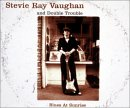
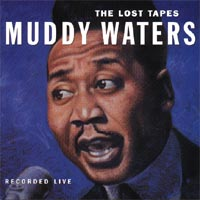
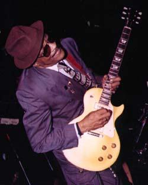

Издан новый сборник, в котором к известным уже записям SRV прибавлены три, ранее не издававшиеся: "Blues At Sunrise" - "Блюз на рассвете"

Название дано по известному блюзу Алберта Кинга, который SRV и Кинг исполняли в теле-джеме в 1983 году. Полностью музыкальная дорожка этого концерта в телестудии впервые опубликована на компакт-диске в прошлом году под названием "Albert King with Stevie Ray Vaughan - In Session". Новая версия "The Sky Is Crying" - это один из вариантов, записанный в 1985г.; другой вариант уже появился на одноименном сборнике. Неопубликованный ранее на аудионосителе концертный вариант исполнения "Texas Flood" взят из хорошо известной видеозаписи "Live At El Macombo". Таким образом единственная действительно неизвестная запись на сборнике это Tin Pan Alley (Roughest Place In Town), записанная в 1985 году на джаз-фестивале в Монтре в дуэте с другим великим покойным техасцем Джонни Коплэндом (Johnny Copeland). Возможно, она одна стоит того, чтобы купить весь диск!
Принцип сборника - только медленные блюзы, что делает его хорошим подарком для любимой девушке... И потенциальным мега-хитом на Горбушке.
(в сегодняшних новостях есть еще информация о неопубликованных записях выступлений SRV, которые можно послушать в сети)
 Выпущенный фирмой "Top Cat" - "Blind Pig", альбом называется "MUDDY WATERS" - "The LOST TAPES" ("Потерянные записи"). Для почитателей чикагской классики - это бесценный подарок. Записано в Вашингтонском университете, 1971 год. Мадди Уотерс принимал тогда участи в большом блюзовом туре вместе с Биг Мамой Торнтон, Биг Джо Тернером, Би Хьюстоном, Джи Би Хьютто и Джорджем "Хармоникой" Смитом.
Этот сказочный, как теперь кажется, набор артистов менажировал Линк Уайлер. И в его личном архиве почти три десятка лет хранилась пленка с записью этого концерта. Наконец-то она опубликована как альбом "The LOST TAPES", причем в СиДиромной части альбома - можно и послушать, и посмотреть интервью Мадди Уотерса, записанное на кинокамеру, когда гастрольный микроавтобус вез его и Биг Маму Торнтон с одного концерта на другой. Еще одно видео: очень пламенное концертное исполнение блюза "Long Distance Call" - "Звонок издалека": "Пока меня не было дома, чужой мул брыкался в моем стойле." В начале 70-х. "Чесс" записывали не лучшие, мягко говоря, студийные альбомы Мадди или Вулфа, навязывая им рок-звезд для рекламы и девичьи подпевки для эстрадной проходимости. "Нашедшиеся " записи Мадди бесспорно доказывают, что на концертах, без продюсерского диктата, он был по прежнему эмоционален и неотразим - как и в лучшие годы.
Выпущенный фирмой "Top Cat" - "Blind Pig", альбом называется "MUDDY WATERS" - "The LOST TAPES" ("Потерянные записи"). Для почитателей чикагской классики - это бесценный подарок. Записано в Вашингтонском университете, 1971 год. Мадди Уотерс принимал тогда участи в большом блюзовом туре вместе с Биг Мамой Торнтон, Биг Джо Тернером, Би Хьюстоном, Джи Би Хьютто и Джорджем "Хармоникой" Смитом.
Этот сказочный, как теперь кажется, набор артистов менажировал Линк Уайлер. И в его личном архиве почти три десятка лет хранилась пленка с записью этого концерта. Наконец-то она опубликована как альбом "The LOST TAPES", причем в СиДиромной части альбома - можно и послушать, и посмотреть интервью Мадди Уотерса, записанное на кинокамеру, когда гастрольный микроавтобус вез его и Биг Маму Торнтон с одного концерта на другой. Еще одно видео: очень пламенное концертное исполнение блюза "Long Distance Call" - "Звонок издалека": "Пока меня не было дома, чужой мул брыкался в моем стойле." В начале 70-х. "Чесс" записывали не лучшие, мягко говоря, студийные альбомы Мадди или Вулфа, навязывая им рок-звезд для рекламы и девичьи подпевки для эстрадной проходимости. "Нашедшиеся " записи Мадди бесспорно доказывают, что на концертах, без продюсерского диктата, он был по прежнему эмоционален и неотразим - как и в лучшие годы.

На концерте с Мадди Уотерса играли гитаристы Сэмми Лаухорн и Пи Уи Мэдисон. Кэлвин Фуз Джоунс - бас и Уилли Биг Айз Смит - барабаны. Эта ритм-секция, вместе с пианистом, Пайнтопом Перкинсом, будет играть в маддиуотерсовском блюзбэнде на протяжении всех 70-х, до окончания гастрольной карьеры Мадди Уотерса; в 1980-м они будут продолжать давать концерты, именуя себя, в отсутствие маэстро - "Legendary Blues Band" - "Легендарный блюзбэнд" - с полным на то основанием.Что касается репертуара концерта - это только хиты Мадди Уотерса. За единственным исключением - блюз Джона Ли Хукера "Crawling Kingsnake" - "Крадущийся Царь-змей" - Мадди Уотерс исполнял относительно не часто.

Хьюберт Самлин - правая рука и названный сын Хаулин Вулфа... Он играл на гитаре в блюзбэнде Вулфа с 1954 года - до последнего его концерта в 1976 году. По жизни им доводилось и крепко подраться, но их музыкальное взаимопонимание было идеальным. Невозможно вообразить блюзовые шедевры Хаулин Вулфа без самлиновской своеобразной на грани абсурда гитарной игры.Но однажды в 1956 году Самлин попробовал поискать счастья на стороне. Единственный к кому можно уйти от Вулфа - это Мадди. Мадди Уотерс обещал молодому Самлину чуть не втрое больше, чем тот получал у Вулфа. Но союз не сложился. Важнее денег и перспектив была естественность блюза. Самлин вернулся к тому, с кем музыкальное взаимопонимание было идеальным. (Хм, правда, в одном интервью Самлин пожаловался, что у Уотерса приходилось слишком много работать...)
Между прочим, Мадди как-то готовил своих музыкантов к самостоятельной дороге в блюзе. А Вулф - нет. Ни у кого, кто с ним работал, не сложилась сольная карьера (Союз с Джеймсом Коттоном имел место в самом начале их пути и был более-менее равноправным дуэтом, к тому же сольная карьера Коттона состоялась после того, как он поработал в блюзбэнде Уотерса). Поэтому Мадди Уотерса (исторически - не совсем обоснованно) зовут отцом Чикагского блюза: сколько учеников он воспитал, а Вулфа, ничем не уступающего в блюзовой силе, - нет.
И Самлин так и не преодолел зависимость от Вулфа. 20 лет он был "потерянным гитаристом". Отдельные записи его концертных выступлений - гениальны, но они-то и подчеркивают, что полновесный студийный альбом, достойный его уникального таланта, Самлин так и не записал. В тени Вулфа он был счастлив по-настоящему.
Все это история. Годы красят блюзмэна. В 1998 году Самлин выпустил два альбома, из которых "WAKE UP CALL" - весьма удачный.
Сейчас ему 68 лет, и на лето нынешнего года запланирован выход нового альбома с интригующим названием "HUBERT PLAYS MUDDY" ("Хьюберт играет Мадди"). Никто бы не удивился, если бы Самлин записал альбом песен Вулфа, они и так звучат на каждом его альбоме. А вот такой поворот интриги - сулит сюрпризы.
Альбом готовит независимый лейбл Mystic Music, но замашки у фирмы - нескромные. Участие Эрика Клэптона и Кейта Ричардса гарантированно привлечет внимание широкой публики. Оба - давние почитатели самобытного таланта Хьюберта Самлина и давно с ним знакомы. Клэптон записывал альбом "London Sessions" с Хаулин Вулфом и Хьюбертом Самлиным в 1971г. Менее известны, но все-таки легендарны на свой манер еще два белых блюз-рокера 60-х: барабанщик Levon Helm (Группа "The Band". Прощальный концерт группы был отснят М.Скорсезе и стал фильмом "Прощальный вальс" ("The Last Waltz"). Блюзбэнд Мадди Уотерса тоже принял в нем участие.); и басист Mudcat Ward, игравший в J. Geils Band. Два соратника Мадди Уотерса, игравшие в его блюзбэнде в 70-х, тоже привлечены к работе. Это харпист Paul Oscher и гитарист Bob Margolin. Последний, не только музыкант, но и теоретик-публицист, считается на сегодняшний день одним из лучших специалистов про теории и практике уотерсовского стиля. Предполагается так же привлечь новую блюз-мейнстримовую звезду Susan Tedeschi; Warren Haynes, участника Allman Brothers Band и Gov't Mule; и Kim Simmonds, еще одного ветерана британского блюза, бывшего лидера Savoy Brown.
По сообщениям, Хьюберт с большим энтузиазмом относится к этому проекту. А на вопрос, насколько отличается работа с песнями Мадди от привычных ему песен Вулфа, ответил: "На самом деле никакой. Различны - песни. Но для меня это не трудно. Потому что я играл их с ним (с Мадди), я должен был знать номера его концерта. С Отисом Спэнном, мы, бывало, репетировали каждый день на его диване, на диване Мадди, в его доме. Вот откуда я знаю эти песни. Вот почему мы и заняты этим проектом.
К тому же, многие из песен альбома сочинены Уилли Диксоном, который писал и для Мадди, и для Вулфа. Рабочий список песен в альбоме: "My Captain," "Long Distance Call," "Big Legged Mama," "Walking Blues," "Still a Fool," "Rollin' Stone," "I Can't Be Satisfied," "She Moves Me," "Baby Please Don't Go," "Gypsy Woman," "Louisiana Blues," "Trouble No More," "Forty Days and Forty Nights," "My Home Is in the Delta," "(I'm Your) Hoochie Coochie Man," "I'm Ready," "I Don't Know Why," "I Want to Be Loved," "Close to You" и "Honey Bee."
Бывшие новости |
Январь-Февраль 1999 |
Март 1999 |
Ноябрь-Декабрь 1999
Январь 2000 |
Февраль 2000 |
Март 2000 |
Апрель 2000